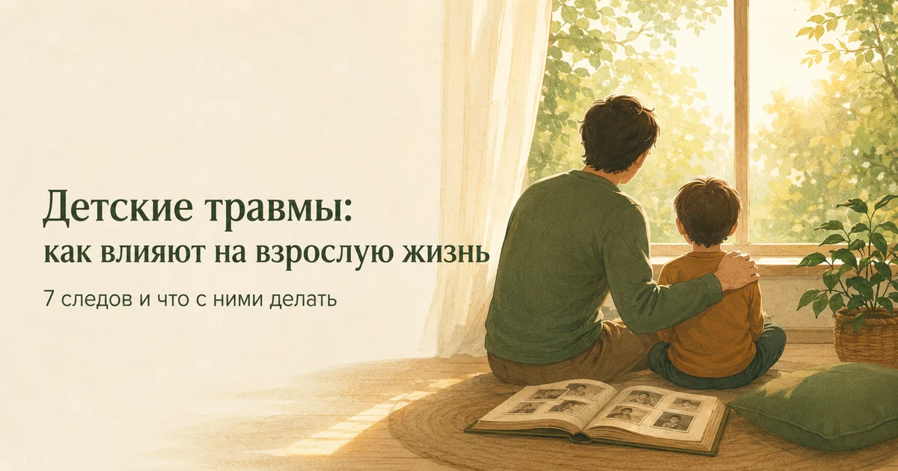
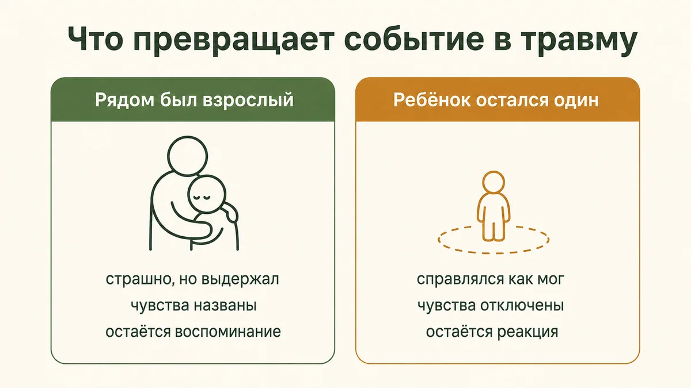
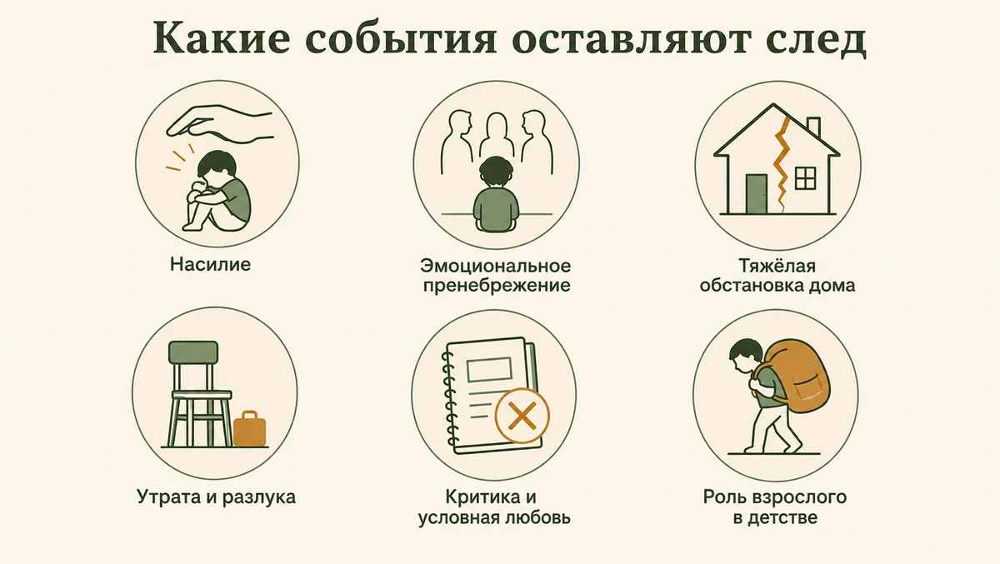
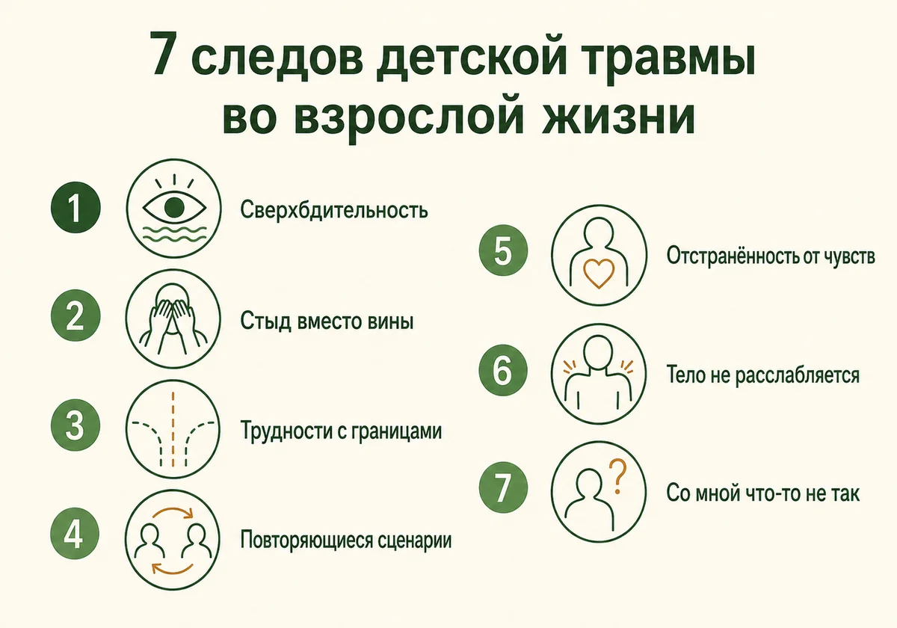
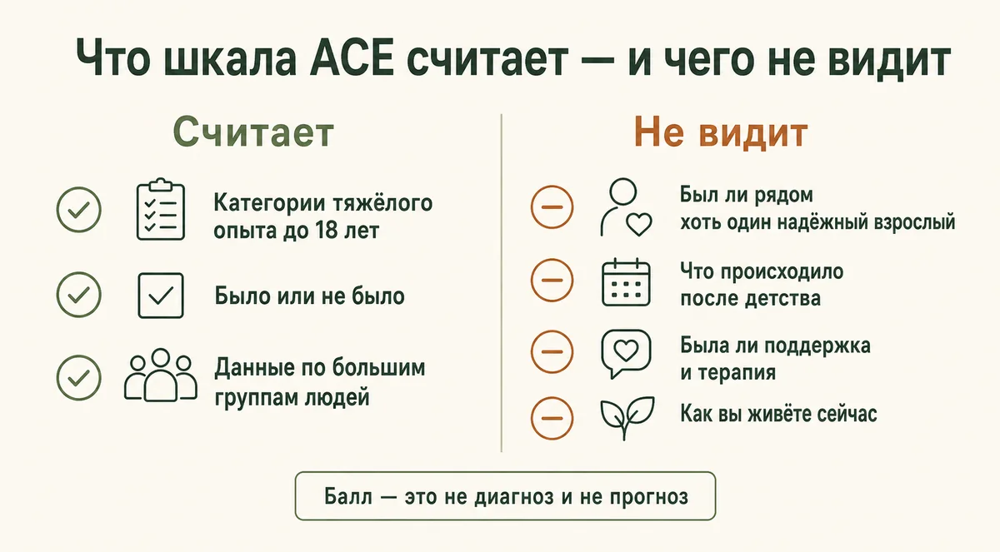
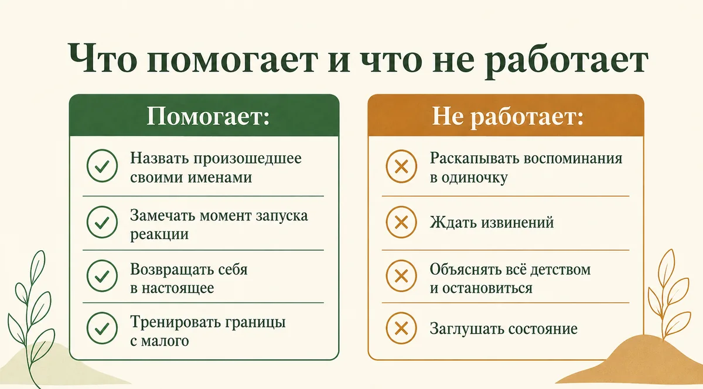

Главная → Блог → Детские травмы
Детские травмы: 7 следов во взрослой жизни и что с ними делать
Обновлено: 19.08.2026 · 13 минут чтения

Детская травма — это не обязательно что-то громкое и очевидное. Это любой опыт, с которым ребёнок не мог справиться в одиночку, а рядом не оказалось взрослого, который помог бы его выдержать. Во взрослой жизни она проявляется не воспоминаниями, а реакциями: телом, которое напрягается без причины, отношениями, которые повторяются по одному сценарию, и фоновым чувством «со мной что-то не так». Хорошая новость в том, что эти реакции сформировались когда-то как защита — а значит, их можно распознать и изменить.
- Что такое детская травма и чем она отличается от плохих воспоминаний
- Какие события оставляют след
- 7 следов детской травмы во взрослой жизни
- Почему это не проходит само: что травма делает с нервной системой
- Экспресс-проверка: реакции, которые стоит заметить
- Почему высокий балл — это не приговор
- 7 шагов, которые действительно помогают
- Что не помогает
- Нужно ли прощать родителей и говорить с ними
- Когда нужен специалист
- Частые вопросы
Что такое детская травма и чем она отличается от плохих воспоминаний
Психологическая травма — это не только само событие, но и его последствия: то, как пережитое влияет на чувство безопасности, эмоции, тело и отношения. Поэтому одно и то же событие для двух детей может закончиться по-разному, и многое здесь зависит не от силы удара, а от того, был ли рядом взрослый. Ребёнок, которого напугала собака, но который потом плакал на руках у мамы, скорее всего вырастет без страха собак. Ребёнок, которому сказали «не выдумывай, ничего страшного», остаётся с этим переживанием один — и психике приходится справляться теми средствами, которые есть: замереть, отключить чувства, решить, что мир опасен, а он сам виноват.
Отсюда важное различие, которое многое объясняет.
| Плохое воспоминание | Травматический след | |
|---|---|---|
| Как ощущается | Как история из прошлого | Как происходящее сейчас |
| Где живёт | В памяти, со словами и датами | В теле и реакциях, часто без слов |
| Что запускает | Осознанное припоминание | Запах, тон голоса, поза, мелочь |
| Реакция | Грусть, сожаление | Мгновенный испуг, злость, оцепенение |

Поэтому фраза «столько лет прошло, пора забыть» обычно не помогает. Забыть можно воспоминание, а вот телесная реакция на резко повышенный голос усилием воли не отменяется. Такие автоматические реакции могут держаться долго, но их интенсивность со временем снижается — особенно когда появляется новый опыт, в котором безопасно.
Какие события оставляют след
Когда говорят «детская травма», обычно представляют побои или катастрофу. На практике список гораздо шире, и многое из него выглядит буднично:
- Физическое, эмоциональное или сексуализированное насилие — в том числе то, что в семье называлось воспитанием.
- Эмоциональное пренебрежение — самое незаметное. Ребёнка кормили и одевали, но его чувства никого не интересовали. Многие взрослые годами не считают это чем-то серьёзным: «меня же не били».
- Тяжёлая обстановка дома — алкоголизм близкого, психическое заболевание родителя, домашнее насилие между взрослыми, развод с втягиванием ребёнка в конфликт.
- Утрата и разлука — смерть родителя, долгая госпитализация, отъезд, ситуация, когда ребёнок остался с чужими людьми.
- Постоянная критика и условная любовь — когда принятие нужно было заслуживать оценками, послушанием, достижениями.
- Роль взрослого в детском возрасте — когда ребёнок утешал маму, разнимал родителей, отвечал за младших.
- Систематическая травля в школе или во дворе, особенно если дома не поддержали. Первым видимым признаком часто становится то, что ребёнок перестаёт хотеть в школу, а в подростковом возрасте — снижение настроения, которое принимают за характер.

По оценке Всемирной организации здравоохранения, с той или иной формой жестокого обращения в детстве сталкивается значительная часть людей во всём мире. Это не редкость и не что-то, случившееся только с вами.
7 следов детской травмы во взрослой жизни
Взрослый человек редко приходит с запросом «у меня детская травма». Он приходит с тем, что мешает жить сегодня. Вот как это обычно выглядит.

- Сверхбдительность. Вы мгновенно считываете настроение других, заранее чувствуете, что кто-то недоволен, просыпаетесь от малейшего звука. Это навык, отточенный в доме, где нужно было предугадывать, в каком настроении вернётся взрослый. Во взрослой жизни он выливается в фоновую тревогу, которая не выключается.
- Стыд вместо вины. Вина говорит «я поступил плохо», стыд — «я плохой». Ребёнок не может признать, что взрослый несправедлив, — для психики безопаснее решить, что дело в нём самом. Этот вывод остаётся и подпитывает низкую самооценку и жёсткую самокритику.
- Трудности с границами. Сложно сказать «нет», попросить о помощи, обозначить, что вам неприятно. Вы соглашаетесь, а потом злитесь на себя. В детстве отказ мог стоить любви — и отказываться до сих пор кажется опасным.
- Повторяющиеся сценарии в отношениях. Вы раз за разом оказываетесь рядом с холодными, непредсказуемыми или обесценивающими людьми. Это не «притягивание несчастий»: знакомое считывается психикой как понятное, а понятное — как безопасное, даже если оно причиняет боль. Подробнее — в статье про токсичные отношения.
- Отстранённость от чувств. На вопрос «что ты сейчас чувствуешь?» — пустота. Отключить чувства когда-то было единственным способом выдержать, и этот механизм продолжает работать по привычке, заодно приглушая радость.
- Тело, которое не расслабляется. Хроническое напряжение в плечах и челюсти, проблемы со сном, боли без находок на обследованиях. Тело продолжает готовиться к опасности, которой давно нет.
- Ощущение «со мной что-то не так». Внешне жизнь может быть в полном порядке, а внутри — устойчивое чувство собственной неправильности и страх, что если люди узнают вас поближе, то отвернутся.
Ни один из этих пунктов сам по себе не доказывает, что в детстве произошло что-то тяжёлое. Но если вы узнали себя сразу в нескольких — это стоит внимания.
Почему это не проходит само: что травма делает с нервной системой
Детство — это период, когда мозг настраивает базовые параметры: насколько мир безопасен, можно ли доверять людям, что делать, когда страшно. Если фоном идёт угроза, система тревоги настраивается на повышенную чувствительность, и эта настройка остаётся с человеком.
Практически это значит, что реакция запускается быстрее, чем включается рассудок. Вы понимаете, что начальник просто устал, а внутри уже всё сжалось. Спорить с этим бесполезно: та часть мозга, которая подаёт сигнал тревоги, не понимает слов и работает по принципу «похоже — значит, опасно».
Отсюда следует главный практический вывод: работа с последствиями травмы идёт не только через разговоры и осознание, но и через тело и через новый опыт. Одного понимания «я так реагирую из-за детства» недостаточно — оно объясняет, но не переучивает.
Если хочется разобраться в своих реакциях, но обратиться к специалисту лично пока тяжело, можно начать с разговора в спокойном формате — например, использовать ИИ-психолога как инструмент для саморефлексии. Это не диагностика и не замена психотерапии, но помогает назвать происходящее словами и понять, с чего начать.
Экспресс-проверка: реакции, которые стоит заметить
Отметьте, что описывает вас за последние месяцы:
- мне трудно расслабиться, даже когда всё спокойно;
- я заранее чувствую себя виноватым, когда кто-то рядом недоволен;
- мне сложно сказать «нет» и просить о помощи;
- я часто не понимаю, что именно чувствую;
- мои отношения повторяют один и тот же болезненный сценарий;
- резкий голос или определённый тон выбивают меня надолго;
- у меня есть устойчивое чувство, что со мной что-то не так.
Если вы узнали себя сразу в нескольких пунктах, это ещё не означает, что в детстве была травма. Но это причина отнестись к себе внимательнее: похоже, что вы много времени проводите в режиме готовности к опасности, а это дорого обходится и телу, и отношениям. Если такие реакции мешают жить, их стоит обсудить со специалистом.
Отдельно от самонаблюдения существует исследовательский инструмент — шкала ACE (Adverse Childhood Experiences). Она устроена иначе: не спрашивает о ваших сегодняшних реакциях, а считает количество категорий тяжёлого опыта до 18 лет — было ли насилие, пренебрежение, алкоголизм в семье, потеря родителя. Это разные вещи, и путать их не стоит.
Почему высокий балл — это не приговор
Шкалу ACE часто пересказывают пугающе: чем выше балл, тем выше риск болезней и меньше продолжительность жизни. Эти цифры взяты из исследований на больших группах людей — и вот что важно понимать про такую статистику.
Данные по группам не предсказывают судьбу конкретного человека. Если в группе с высоким баллом какое-то состояние встречается чаще, это не означает, что оно ждёт вас. За одинаковым баллом стоят совершенно разные жизни: у кого-то была бабушка, у которой было безопасно, тренер, который верил, друг, с которым можно было говорить. Такие вещи шкала не считает вовсе.

Чего ещё не видит шкала: что происходило после детства, была ли терапия, есть ли сейчас близкие отношения, как вы обходитесь со стрессом. Ровно эти факторы влияют на то, как вы живёте сегодня, — и на них, в отличие от прошлого, можно повлиять.
Поэтому единственный правильный способ прочитать высокий балл — как «в моём детстве было много тяжёлого, и мне имеет смысл позаботиться о себе внимательнее», а не как медицинский прогноз.
7 шагов, которые действительно помогают
- Назовите произошедшее своими именами. Не «у меня было обычное детство, просто отец выпивал», а «в моём детстве было небезопасно». Психика годами защищала вас обесцениванием — но пока событие не названо, с ним нечего делать. Это не про обвинение родителей, а про признание фактов.
- Научитесь замечать момент запуска. В следующий раз, когда «накроет», отследите: что было за секунду до? Чей-то тон, взгляд, фраза? Цель — поймать связь между триггером и реакцией. Помогает короткая запись: ситуация — что почувствовал в теле — какая мысль пришла.
- Возвращайте себя в настоящее. Когда реакция уже запустилась, спорить с ней бесполезно — нужно дать телу сигнал безопасности. Работают длинный выдох (вдох на 4, выдох на 6–8), опора стопами в пол, называние вслух пяти видимых предметов. Это не «отвлечение», а способ показать нервной системе, что угрозы сейчас нет.
- Отделите прошлое от настоящего. Прямо в момент реакции полезно сказать себе конкретно: «мне сейчас не восемь лет, это мой коллега, а не отец, и я могу выйти из этой комнаты». Звучит наивно, но именно такое проговаривание постепенно разводит две склеенные ситуации.
- Тренируйте границы с малого. Не нужно начинать с главного конфликта жизни. Начните там, где цена ошибки мала: вернуть остывший кофе, не ответить на сообщение сразу, сказать «мне это не подходит» в мелочи. Границы — это навык, он ставится повторением.
- Дайте место злости и горю. За таким опытом часто стоит непрожитая злость на тех, кто должен был защитить, и горе о том детстве, которого не было. Обе эмоции часто под запретом — а без них не получается двинуться дальше. Злость не обязана выливаться на кого-то: её можно выписать, выговорить, отдать телу через нагрузку.
- Стройте новый опыт отношений. Убеждение «людям нельзя доверять» переучивается только опытом, в котором доверие оправдалось. Небольшими шагами: рассказать чуть больше, чем обычно, попросить о помощи, остаться в контакте после ссоры вместо привычного исчезновения.
Из терапевтических подходов с этим материалом прицельно работают схема-терапия — она как раз про устойчивые убеждения, сложившиеся в детстве, — и терапия, сфокусированная на сострадании, если ведущее чувство — стыд и жёсткая самокритика.
Что не помогает
- Раскапывать воспоминания в одиночку. Попытка «вспомнить всё» без поддержки чаще приводит к тому, что человека накрывает и он остаётся с этим один — то есть повторяется исходная ситуация.
- Ждать извинений. Ваше состояние не должно зависеть от того, признает ли кто-то свою неправоту. Многие так и не признают.
- Объяснять всё детством и на этом останавливаться. Объяснение приносит облегчение, но само по себе ничего не меняет — за пониманием должна идти практика.
- Заглушать состояние. Алкоголь, бесконечная работа, случайные связи, сериалы до утра дают паузу и увеличивают счёт.
- Сравнивать свою боль с чужой. «Другим было хуже» — самый быстрый способ снова обесценить себя. Тяжесть переживания не определяется рейтингом.

Нужно ли прощать родителей и говорить с ними
Короткий ответ: вы никому ничего не должны. Прощение может стать итогом внутренней работы, но оно не входное условие и не задание. Требование простить, предъявленное слишком рано, обычно заканчивается тем, что человек снова подавляет свои чувства — то есть делает ровно то, чему научился в детстве.
Разговор с родителями тоже не обязателен. Иногда он приносит облегчение, иногда — новую травму, если в ответ звучит «ты всё выдумал» или «мы старались как могли, а ты неблагодарный». Если вы всё-таки решаетесь, полезно заранее ответить себе: чего я жду от разговора и выдержу ли я, если не получу этого?
Отдельный случай — когда контакт продолжается и остаётся разрушительным. Тогда задача не в разговоре, а в дистанции: сокращать частоту встреч, не оставаться наедине, прекращать разговор на неприятной теме. Это допустимо, даже если родные считают иначе.
Когда нужен специалист
Самопомощь хороша для фоновых вещей. Есть состояния, при которых нужна поддержка человека рядом:
- яркие непрошеные воспоминания, флешбэки, кошмары, ощущение, что прошлое происходит снова;
- провалы во времени, чувство нереальности себя или происходящего;
- панические атаки, сильная тревога, навязчивые мысли, которые не уходят;
- подавленность и признаки депрессии, которые держатся неделями;
- самоповреждение или попытки заглушать состояние алкоголем и веществами;
- мысли о том, что не хочется жить.
Работа с травматическим опытом — та область, где важна не только методика, но и темп: хороший специалист не станет с порога расспрашивать о самом тяжёлом, а сначала поможет вам обрести устойчивость. Если после сессий вас регулярно накрывает надолго, об этом нужно сказать терапевту — темп можно и нужно менять.
Частые вопросы
Можно ли вылечить детскую травму во взрослом возрасте?
Стереть прошлое нельзя, но изменить его влияние на настоящее — можно, и это не зависит от возраста. Мозг сохраняет способность к перестройке всю жизнь: в терапии человек постепенно учится замечать старые реакции, отличать прошлую опасность от нынешней и выбирать другой ответ. Многие люди начинают такую работу в 30, 40, 50 лет и получают устойчивый результат. Начинать никогда не поздно.
Обязательно ли прощать родителей, чтобы стало легче?
Нет. Прощение — это возможный итог работы, а не её обязательное условие и не задание, которое нужно выполнить. Требование простить, предъявленное человеку слишком рано, обычно приводит к тому, что он снова подавляет свои чувства — то есть делает ровно то, что и в детстве. Облегчение приносит не прощение как таковое, а признание того, что произошло, право злиться и горевать и выстроенные границы в настоящем.
Что делать, если я почти не помню своё детство?
Пробелы в воспоминаниях о детстве встречаются часто и сами по себе не означают, что случилось что-то ужасное. Память в раннем возрасте устроена иначе, а при длительном стрессе воспоминания бывают фрагментарными или эмоционально менее доступными. Сам по себе пробел в памяти не доказывает наличие травмы. Для работы с состоянием восстанавливать события не обязательно: терапия опирается на то, что происходит с вами сейчас — на реакции, телесные ощущения и отношения, а не на реконструкцию прошлого.
Может ли детская травма проявиться спустя много лет?
Да, и это обычное явление. Пока жизнь стабильна, старые механизмы могут не давать о себе знать. Они проявляются на переходах: рождение ребёнка, разрыв отношений, смерть родителя, потеря работы, собственный возраст, в котором когда-то было тяжело. Внезапно накрывшие тревога, злость или отстранённость в такие моменты — не признак того, что вы сломались, а реакция психики на узнаваемую ситуацию.
Высокий балл по тесту ACE — это диагноз?
Нет. Шкала ACE считает количество категорий тяжёлого детского опыта и была создана для исследований на больших группах людей, а не для оценки конкретного человека. Она не ставит диагноз и не предсказывает вашу судьбу: за одним и тем же баллом стоят очень разные жизни. Высокий результат — это повод отнестись к себе внимательнее и, возможно, обратиться за поддержкой, а не приговор.
Правда ли, что травма передаётся детям?
Речь идёт не о передаче травмы как таковой, а о том, что человек воспроизводит усвоенные в детстве способы обращения с чувствами и отношениями: как реагировать на плач, как мириться после ссоры, можно ли злиться. Поэтому цепочку и удаётся прерывать: когда родитель замечает свои реакции и работает с ними, меняется то, что видит ребёнок. Быть идеальным для этого не требуется — достаточно восстанавливать контакт после срывов.
Читать также
- Тест на детские травмы (шкала ACE) — 10 вопросов, анонимно, с разбором результата.
- Как повысить самооценку: 8 шагов, которые реально работают — если ведущее чувство «я недостаточно хорош».
- Токсичные отношения: 12 признаков и как из них выйти — про повторяющиеся сценарии в отношениях.
- Как справиться с тревогой: 8 техник, которые реально помогают — если фоном идёт постоянное напряжение.
- Схема-терапия — подход, прицельно работающий с убеждениями из детства.
Материал подготовлен командой AI Therapist и основан на доказательных подходах — когнитивно-поведенческой терапии (КПТ), схема-терапии и травма-информированной практике. Статья носит просветительский характер, не ставит диагноз и не заменяет консультацию специалиста.
Источники: Всемирная организация здравоохранения — жестокое обращение с детьми, CDC — Adverse Childhood Experiences (ACEs), NHS — Post-traumatic stress disorder, Felitti et al., 1998 — исходное исследование ACE, ВОЗ — международный опросник ACE-IQ, NCTSN — типы детской травмы.
Источники проверены 19.08.2026.
Кто отвечает за содержание сайта и по каким правилам мы готовим материалы — на странице о проекте.